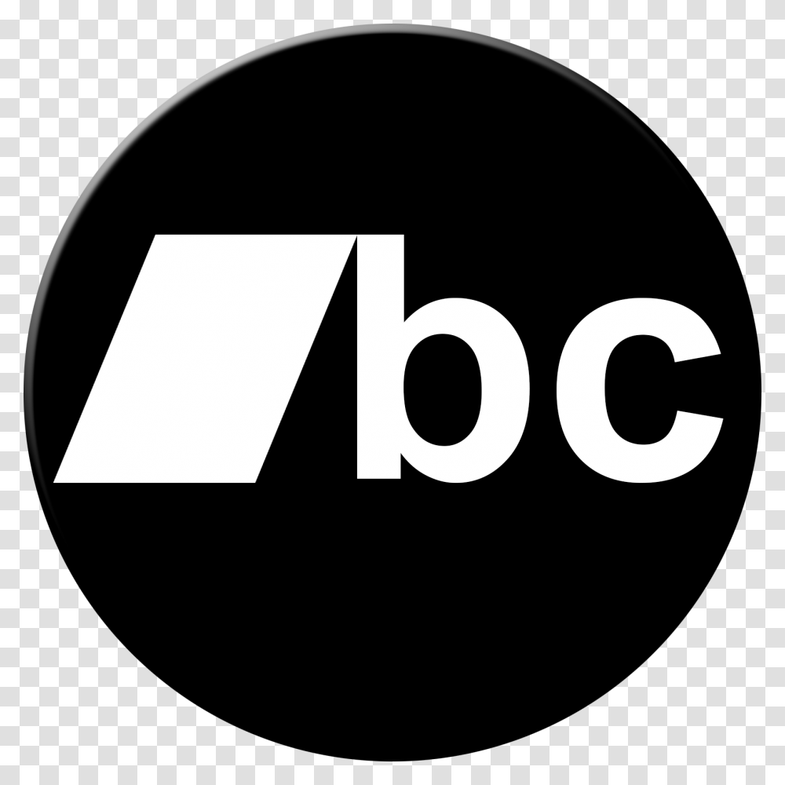

CONCENTRICK
Releases
 |  |  |  |
| APPLE MUSIC | SPOTIFY | AMAZON MUSIC | BANDCAMP |
|
|
 The First Collection follows a period from about 2012 to 2016 which originally were on albums of thier own but ...
stupid names, stupid track layouts, songs that shouldn't have been there, really. So rather than have separate
albums cluttering up the place (also with stupid album art) I decided to just select those I'm most fond of,
and have them as part of two collections (The Second Collection being the other).
The First Collection follows a period from about 2012 to 2016 which originally were on albums of thier own but ...
stupid names, stupid track layouts, songs that shouldn't have been there, really. So rather than have separate
albums cluttering up the place (also with stupid album art) I decided to just select those I'm most fond of,
and have them as part of two collections (The Second Collection being the other).
While you could call this a compilation - and it kind of is a collection of material from 2010 to 2016-ish,
to me its just an album of material that was written during that period of time.
All of these songs, without exception, were done in a program called Reason. It was the first program I ever had any experience using
(albeit it a much earlier version) and so when I was looking for software, I got this one.
It's hard for me to recommend it today as I have not really used any kind of up to date version beyond Reason 10 -
I have no idea what current state it's in.
Unfortunately, almost none of the source files for this album can be found. I used to have a stupid mindset where (on older computers) space was at a premium, and keeping things I didn't need was just taking up space that I needed - although to be fair to myself, I did also loose a bunch of files when a 250GB drive crashed on me. But I was (at the time) like "well I've finished it, why would I ever need to go back into it?" -_- Dear oh dear.
|